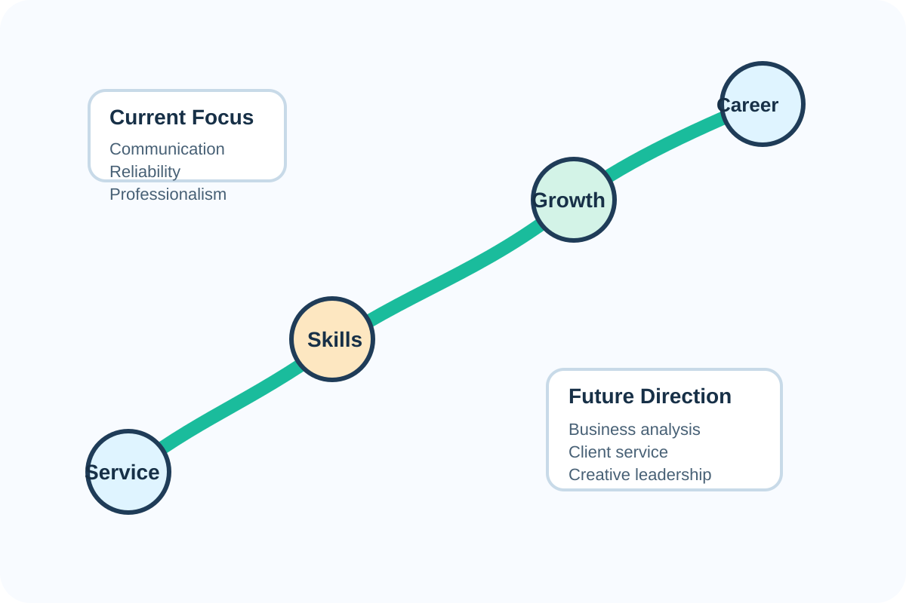

Where I am headed
I am especially interested in opportunities that require precision, professionalism, and thoughtful communication. Business appeals to me because it blends strategy with real-world problem solving, and it gives me room to grow in both analytical and people-centered work.
My long-term goal is to build a career where I can bring value through strong work ethic, careful thinking, clear communication, and a willingness to keep learning.
Featured Areas
Business & Analysis
Interested in accounting, planning, and making decisions based on strong organization and accurate information.
Digital Communication
Enjoy shaping messages for social media, events, and professional contexts with tone and audience in mind.
Service & Leadership
Value work that helps others and requires responsibility, reliability, and strong follow-through.
Creativity
Love projects involving aesthetics, storytelling, travel, photography, and presentation design.
Why this portfolio matters
This portfolio was designed to present information clearly while still showing personality. It balances a professional tone with a more personal page that highlights a hobby and a creative app.
Together, the pages show both technical web development skills and the ability to organize a full project well.
Explore the custom pages
Every page was built to support the assignment rubric while still feeling coherent as one complete site.